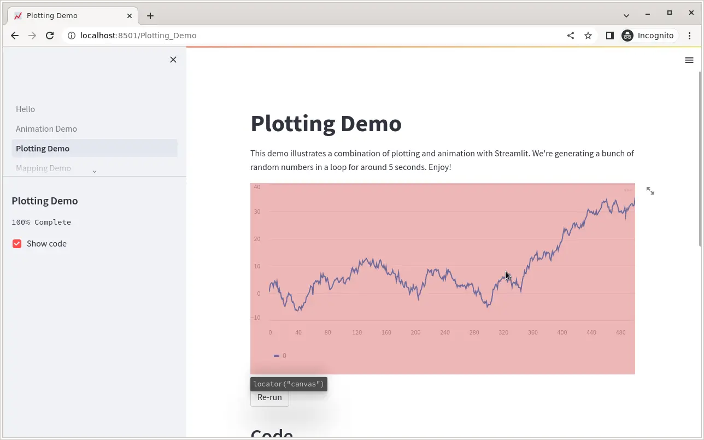
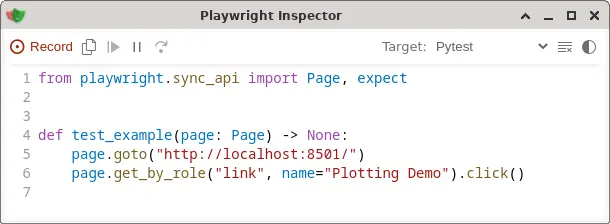

Test your Streamlit dashboard using Playwright
2023-05-17
Over the last year, Streamlit has quickly become one of my favourite tools to showcase research data. I have been using it to create interactive dashboards and simple user interfaces for my data analysis tools.
As a software engineer, I want to make sure that whenever I make changes to my code, the dashboard that my users interact with still functions. Whether I did a refactoring, made some changes to the Python API of some functions, or a dependency got out-of-date. There are many reasons why a Streamlit dashboard may crash or refuse to work.
Testing a Streamlit dashboard manually can be quite time-consuming after every code change. Sometimes I simply forget. So I was looking for a way to automate this process.
Playwright
For my requirements, I was looking for some tool that I can call from Python, is fairly lightweight, and easy to get started with.
I had previously heard about Selenium as the goto tool for browser automation and testing of web apps, but in my search I quickly came across Playwright. There are many reasons to prefer one over the other, but it seems that Playwright is a more modern tool with a growing community.
The thing that won me over is that it has a plugin for pytest and is easy to install. It even has a code generator!
Getting started
Installing pytest into my virtual environment was straight-forward via the plugin:
pip install pytest-playwrightThis will also install the playwright library, but you should install browsers seperately. I'm not interested in testing browser support, so I stick with the chromium default:
playwright install chromiumWriting your first Streamlit test
First, start your Streamlit app. For this example, I use the Streamlit demo page. You can replace this with your own Streamlit app. I open it in headless mode to prevent Streamlit from opening a browser.
streamlit hello --server.headless trueIn a different tab, start the playwright code generator:
playwright codegen http://localhost:8501{kind=link}

The code generator can be used to generate entire user workflows and automate testing procedures. You will get a little inspector window which will write out the code for you in Python, Java, Node.js, or C#.
I have found the code generate to be very useful to get locators. These can be used as targets to click on or to verify whether elements are present.
{kind=link}

Add the generated code to a file, i.e. test_hello.py and run pytest:
pytest test_hello.pyA cool feature, is that you can run it in headed mode, which will open up a Chromium window so you can follow along with the steps.
pytest test_hello.py --headedWaiting for long running processes
If you're doing any sort of computation in your dashboard or need to wait for the page to load, you may have to tell playwright to pause at certain times.
One trick I found is to look for the Running... widget at the top of the page. While the widget is there, we cannot continue with the tests. You can add this line whever you need to wait for the next element to load:
page.get_by_text('Running...').wait_for(state='detached')A complete script for testing
Below is an example of what a complete script may look like. This code should run 'as-is' if you have installed streamlit, pytest, and pytest-playwright. Save it as as test_hello.py and run pytest test_hello.py. Checkout the full documentation for the playwright python api here.
import time
from contextlib import contextmanager
import pytest
import subprocess as sp
from playwright.sync_api import Page, expect
PORT = '8502'
BASE_URL = f'localhost:{PORT}'
@pytest.fixture(scope='module', autouse=True)
def run_streamlit():
"""Run the app."""
p = sp.Popen([
*('streamlit', 'hello'),
*('--server.port', PORT),
*('--server.headless', 'true'),
])
time.sleep(10) # give Streamlit some time to start
yield
p.kill()
def test_page_load(page: Page):
"""Test performance of landing page."""
page.goto(BASE_URL)
page.get_by_text('Running...').wait_for(state='detached')
expect(page).to_have_title("Hello")
selector = page.get_by_text("Welcome to Streamlit! 👋")
expect(selector).to_be_visible()
def test_plotting_demo(page: Page):
"""Test performance of plotting demo."""
page.goto(f'{BASE_URL}/Plotting_Demo')
page.get_by_text('Running...').wait_for(state='detached')
expect(page).to_have_title('Plotting Demo')
page.get_by_text('Running...').wait_for(state='detached')
selector = page.locator("canvas")
expect(selector).to_be_visible()